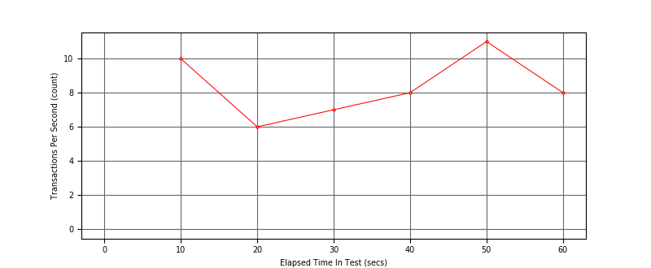
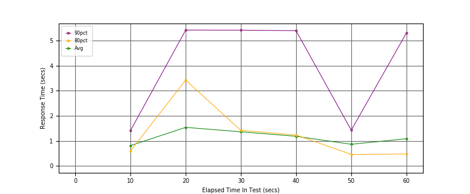
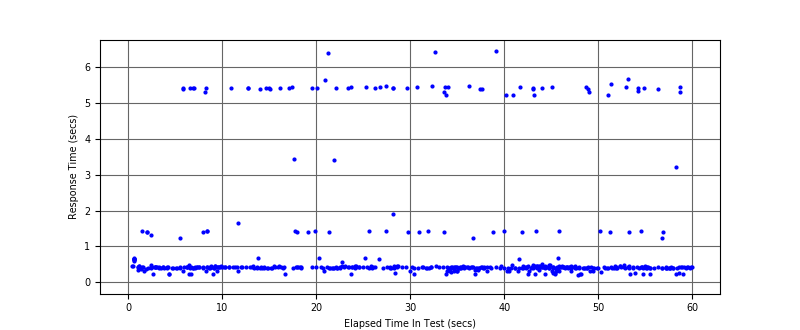

Performance Results Report
Summary
transactions: 539
errors: 28
run time: 60 secs
rampup: 0 secs
test start: 2017-08-22 22:21:25
test finish: 2017-08-22 22:22:25
time-series interval: 10 secs
workload configuration:
| group name | threads | script name |
|---|
| user_group-1 | 7 | regular_user.py |
| user_group-2 | 3 | intensive_user.py |
All Transactions
Transaction Response Summary (secs)
| count | min | avg | 80pct | 90pct | 95pct | max | stdev |
|---|
| 539 | 0.212 | 1.087 | 0.648 | 5.396 | 5.430 | 6.451 | 1.645 |
Interval Details (secs)
| interval | count | rate | min | avg | 80pct | 90pct | 95pct | max | stdev |
|---|
| 1 | 108 | 10.80 | 0.220 | 0.811 | 0.599 | 1.412 | 5.408 | 5.430 | 1.243 |
| 2 | 61 | 6.10 | 0.234 | 1.539 | 3.426 | 5.426 | 5.432 | 5.443 | 1.995 |
| 3 | 74 | 7.40 | 0.222 | 1.361 | 1.419 | 5.423 | 5.454 | 6.412 | 1.903 |
| 4 | 86 | 8.60 | 0.217 | 1.182 | 1.234 | 5.403 | 5.455 | 6.451 | 1.798 |
| 5 | 116 | 11.60 | 0.212 | 0.862 | 0.458 | 1.427 | 5.405 | 5.456 | 1.407 |
| 6 | 84 | 8.40 | 0.222 | 1.085 | 0.473 | 5.313 | 5.409 | 5.661 | 1.648 |
Graphs
Response Time: 10 sec time-series
Response Time: raw data (all points)
Throughput: 5 sec time-series

Custom Timer: Latency
Timer Summary (secs)
| count | min | avg | 80pct | 90pct | 95pct | max | stdev |
|---|
| 529 | 0.212 | 1.087 | 0.648 | 5.395 | 5.430 | 6.451 | 1.645 |
Interval Details (secs)
| interval | count | rate | min | avg | 80pct | 90pct | 95pct | max | stdev |
|---|
| 1 | 108 | 10.80 | 0.220 | 0.810 | 0.599 | 1.412 | 5.407 | 5.430 | 1.243 |
| 2 | 61 | 6.10 | 0.234 | 1.539 | 3.426 | 5.426 | 5.432 | 5.442 | 1.995 |
| 3 | 74 | 7.40 | 0.222 | 1.361 | 1.419 | 5.423 | 5.454 | 6.412 | 1.903 |
| 4 | 86 | 8.60 | 0.216 | 1.182 | 1.233 | 5.403 | 5.455 | 6.451 | 1.798 |
| 5 | 116 | 11.60 | 0.212 | 0.862 | 0.458 | 1.427 | 5.405 | 5.456 | 1.407 |
| 6 | 84 | 8.40 | 0.222 | 1.085 | 0.473 | 5.313 | 5.409 | 5.661 | 1.648 |
Graphs
Response Time: 10 sec time-series

Response Time: raw data (all points)

Throughput: 10 sec time-series